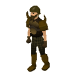
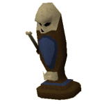
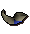

")
Angriffsarena der Barbaren
Einführung | Lage | Voraussetzungen | Empfohlene Ausrüstung | Erste Schritte
Das Horn | Das Horn des Ruhms | Die Angreifer-Rolle | Die Verteidiger-Rolle | Die Heiler-Rolle | Die Sammler-Rolle
Der Eierwerfer | Die Bestrafer-Königin | Belohnungen | Entwicklung
Das Horn | Das Horn des Ruhms | Die Angreifer-Rolle | Die Verteidiger-Rolle | Die Heiler-Rolle | Die Sammler-Rolle
Der Eierwerfer | Die Bestrafer-Königin | Belohnungen | Entwicklung
Nur RuneScape-Mitglieder haben Zugang zu diesem Minispiel. Wenn ihr euch anmeldet, könnt auch ihr dieses Feature nutzen.
Bitte beachtet, dass es sich hier um ein 'sicheres' Minispiel handelt. Falls ihr während des Minispiels sterbt, behaltet ihr alle eure Sachen.
Einführung

Diese Barbaren sind recht außergewöhnlich, denn sie haben eine militärische Struktur angenommen, um zu zeigen, dass sie für ihre Sünden büßen. Den aufmerksamen Beobachtern unter euch wird allerdings auffallen, dass nicht viele der Barbaren einen höheren Rang als Gefreiter besitzen.
In der Angriffsarena der Barbaren nehmt ihr und eure Freunde es mit den seltsamen Ausgeburten auf, die unter dem Außenposten leben. Dabei müsst ihr als Team arbeiten und euch neun Angriffswellen der Bestrafer entgegenstellen, um in der zehnten Welle der Königin unter den Augapfel zu treten.
Lage

Ihr könnt euch auch mithilfe der Spiele-Halskette zur Angriffsarena der Barbaren teleportieren.
Voraussetzungen
Für die Angriffsarena der Barbaren gibt es eigentlich keine Voraussetzungen, ihr werdet aber bei jeder Welle stärkere Gegner besiegen müssen. Eine hohe Kampfstufe ist also von Vorteil.
Empfohlene Ausrüstung
Ihr müsst eigentlich keine Ausrüstung in die Angriffsarena der Barbaren mitbringen. Gutes Rüstzeug und eine Waffe mit den verfügbaren Kampfstilen 'kontrolliert', 'aggressiv', 'defensiv' und 'präzise' wären allerdings nützlich. Da man keine Pfeile oder Runen mit in die Höhlen unter dem Außenposten nehmen darf, sollte man diese vorher in seinem Bankschließfach lagern. In der Eingangshalle der Arena befindet sich zu diesem Zweck ein SB-Schalter.
Erste Schritte

Alle Spieler, die sich gegen die Bestrafer behaupten wollen, müssen zuerst eine Einsatzbesprechung bei Hauptmann Cain absolvieren. Cain ist der hochrangigste Offizier des Außenpostens. Aus diesem Grund sollte man seine Ratschläge stets befolgen. Anmerkung: Hauptmann Cains Einleitung ist sehr lang. Ihr müsst sie vollständig absolvieren, bevor euch Zutritt zu den Höhlen gewährt wird. Ihr solltet ihm aber trotzdem genau zuhören.
Die Angriffsarena der Barbaren ist ein Teamspiel. Wenn die Spieler kein Teamwork betreiben, werden sie nicht weit kommen. Jedes Team besteht aus 5 Mitgliedern, die zusammenarbeiten müssen, um die Wellen der Bestrafer zu besiegen.
Nachdem ihr die Grundausbildung bei Hauptmann Cain abgeschlossen habt, könnt ihr über die Leiter zu dem Einsatzbesprechungsraum gelangen. Es gibt zwei Möglichkeiten, ein Spiel zu beginnen:
- Begebt euch in den Raum mit der Nummer 1 im unteren Stockwerk. Ein Spieler muss eine Anwerbe-Schriftrolle an sich nehmen und sie mit den anderen Spielern 'benutzen', damit sie sich für das Team eintragen und ihre Rollen wählen können. Um seine eigene Rolle einzutragen, muss der Teamchef nur die Schriftrolle rechtsklicken und 'Rolle eintragen' auswählen. Sobald sich 5 Mitglieder im Team befinden, muss der Teamchef die Leiter im Raum runtersteigen. Es gibt insgesamt 10 Räume, die der entsprechenden Welle zugeordnet sind. Falls ihr also das Minispiel verlasst, könnt ihr beim nächsten Mal direkt wieder in dem Raum anfangen, in dem ihr zuletzt gespielt habt.
- Ihr könnt euch in den Raum begeben, der mit einem Pfeil gekennzeichnet ist. Das ist der Schnellstarter-Raum. Sobald ihr den Raum betretet, müsst ihr euch für eine Rolle entscheiden. Das Spiel fängt dann automatisch an, sobald sich 5 Mitspieler eingetragen haben und alle Rollen für ein Team besetzt sind.
Jeder Spieler kann sich für eine von vier Rollen entscheiden. Der fünfte Spieler kann eine Rolle annehmen, die bereits von einem anderen Spieler gewählt wurde.
Das Horn
Sobald ihr das Spiel betretet, erhaltet ihr ein Horn, mit dem ihr euren Mitspielern Anweisungen geben müsst. Wenn ihr das versäumt, dann wird euer Team keinen Erfolg gegen die Bestrafer haben.
In der rechten oberen Ecke des Bildschirms seht ihr wichtige Informationen:
![[Bild: Bestrafer-Welle]](../../img/main/kbase/minigames/barbassault/wave_number.gif "Bestrafer-Welle") |
Dieses Symbol zeigt an, auf welcher Welle ihr euch befindet. Es gibt insgesamt 10 Wellen. Die Bestrafer-Königin erscheint während der zehnten Welle. |
| Dieses Symbol zeigt an, welche Aufgabe ein anderer Mitspieler euch aufgetragen hat. Lest weiter, um mehr zu erfahren. | |
| Dieses Symbol stellt einen 'Mund' dar und zeigt an, welche Anweisungen ihr mit eurem Horn geben müsst. Lest weiter, um mehr zu erfahren. | |
| Das Horn-Symbol zeigt an, wem ihr Anweisungen gebt und vom wem ihr eure erhaltet. |
Um das Teamwork zu gewährleisten, müsst ihr euren Mitspielern regelmäßig mitteilen, welche Aufgabe sie übernehmen sollen. Angreifer sagen den Sammlern, welche Farbe die Eier haben müssen, die sie aufsammeln sollen und umgekehrt vermitteln die Sammler den Angreifern, welchen Kampf-Stil, Magie-Stil beziehungsweise welche Art von Pfeilen sie benutzen müssen. Die Heiler informieren die Verteidiger darüber, mit welchem Nahrungsmittel sie die Bestrafer-Läufer locken müssen und umgekehrt vermitteln die Verteidiger den Heilern, welches Gift auf die Bestrafer-Heiler angewendet werden muss.
Es ist unabdingbar, sich mit dem Gebrauch der Hörner vertraut zu machen, ansonsten wird das Team schnell von den Wellen der Bestrafer überrollt.
Das Horn des Ruhms

Klickt einfach auf das Horn des Ruhms, um es zu benutzen. Es öffnet sich dann ein großes Fenster mit allen Bedienelementen.
Auf der linken Seite des Fensters sehr ihr eine Liste mit allen Aufgaben, die die einzelnen Rollen übernehmen müssen. Auf der rechten Seite findet ihr die einzelnen Optionen für jede Rolle. Man muss nur auf eine dieser Möglichkeiten klicken, um der entsprechenden Rolle ihre Aufgabe mitzuteilen.
Da jedes Team aus 5 Mitgliedern besteht, es aber nur 4 Rollen gibt, ist es durchaus sinnvoll, dass einer der Spieler in der Doppelrolle das Horn des Ruhms oder den Eierwerfer benutzt, sobald er seine eigentliche Aufgabe erfüllt hat.
Angreifer
![[Bild: Roll-O-Mat]](../../img/main/kbase/minigames/barbassault/attacker_vending_machine.gif "Roll-O-Mat") Die Aufgabe der Angreifer in der Angriffsarena der Barbaren ist klar definiert. Sie müssen die Bestrafer-Kämpfer und -Fernkämpfer besiegen, die aus den Löchern im nördlichen Teil der Höhle strömen. Ganz so einfach ist das aber nicht, denn die Bestrafer ändern in unregelmäßigen Abständen ihre Resistenz gegen die verschiedenen Kampfstile, Zauber und Pfeile. Um diese Bestien zu bezwingen, seid ihr also auf die Anweisungen der Sammler angewiesen, die euch sagen können, welcher Stil oder welche Art von Pfeilen benutzt werden muss.
Die Aufgabe der Angreifer in der Angriffsarena der Barbaren ist klar definiert. Sie müssen die Bestrafer-Kämpfer und -Fernkämpfer besiegen, die aus den Löchern im nördlichen Teil der Höhle strömen. Ganz so einfach ist das aber nicht, denn die Bestrafer ändern in unregelmäßigen Abständen ihre Resistenz gegen die verschiedenen Kampfstile, Zauber und Pfeile. Um diese Bestien zu bezwingen, seid ihr also auf die Anweisungen der Sammler angewiesen, die euch sagen können, welcher Stil oder welche Art von Pfeilen benutzt werden muss. Angreifer müssen nur eine gute Nahkampfwaffe oder einen Bogen mitbringen. Runen und Pfeile sind über den Angreif-O-Maten erhältlich, der durch ein rotes Schwert-Symbol gekennzeichnet ist. Wenn ihr Runen verlangt, erhaltet ihr bis zu 50 Elementar- und Katalysen-Runen. Wenn ihr Pfeile verlangt, erhaltet ihr bis zu 50 Bronze-, Eisen-, Stahl- und Mithril-Pfeile.
![[Bild: Horn]](../../img/main/kbase/minigames/barbassault/attacker_horn.gif "Horn") Die Angreifer müssen, mithilfe ihres Horns, den Sammlern Anweisungen mitteilen.
Die Angreifer müssen, mithilfe ihres Horns, den Sammlern Anweisungen mitteilen.
Verteidiger
Es ist die Aufgabe der Verteidiger, die Bestrafer-Läufer auszuschalten. Die Läufer versuchen, von den Löchern im Norden der Arena bis zum Ausgang im Süden zu gelangen. Man kann sie nur aufhalten, indem man sie in eine der Fallen im Westen und Osten der Arena lockt. Die Verteidiger können außerdem Barrikaden bauen, die es den Bestrafern zeitweise unmöglich machen, die Arena durch die Löcher im Norden zu betreten.
Um die Läufer in die Fallen zu locken, muss der Verteidiger entweder Würmer, Kekse oder Tofu als Köder auslegen und sie somit zur Falle führen. Die Spur der Köder sollte auf der Falle selbst enden, sodass die Läufer lange genug stehenbleiben, um von der Falle zerfetzt zu werden. Die Läufer wechseln allerdings schnell ihren Geschmack und lassen sich dann nur noch von einer bestimmten Art Köder locken. Manchmal ignorieren sie die Köder auch vollständig und laufen auf schnellstem Weg zum Ausgang. Welchen Köder die Verteidiger benutzen müssen, erfahren sie von den Heilern.

Um ausreichend Köder für das Spiel zu bekommen, muss der Verteidiger nur den Verteid-O-Maten benutzen. Dieser ist mit dem Symbol eines blauen 'Schilds' gekennzeichnet.
Die Fallen sind leider sehr simpel, sodass sie repariert werden müssen, nachdem zwei Läufer damit gefangen wurden. Dazu muss man nur einen Hammer mit der Falle benutzen, wenn sich dazu noch einige Scheite im Inventar befinden. Ihr könnt die Falle auch rechtsklicken und 'Reparieren' auswählen, wenn sich ein Hammer und Scheite in eurem Inventar befinden. Im Norden der Höhle liegen ein Hammer und einige Scheite, wie auf dem oben stehenden Bild verdeutlicht.
Um die Barrikaden über den Löchern aufzubauen, muss man nur den Hammer mit dem Loch benutzen, während sich einige Scheite im Inventar befinden. Das verhindert für eine kurze Zeit, dass die Bestrafer die Höhle betreten können.
 Die Verteidiger müssen, mithilfe ihres Horns, den Heilern Anweisungen mitteilen.
Heiler
![[Bild: Roll-O-Mat]](../../img/main/kbase/minigames/barbassault/healer_vending_machine.gif "Roll-O-Mat") Heiler haben zwei Aufgaben in der Angriffsarena der Barbaren. Zunächst einmal müssen sie darauf achten, dass kein Mitglied ihres Teams in der Höhle stirbt und zum anderen müssen sie die Bestrafer-Heiler vergiften.
Heiler haben zwei Aufgaben in der Angriffsarena der Barbaren. Zunächst einmal müssen sie darauf achten, dass kein Mitglied ihres Teams in der Höhle stirbt und zum anderen müssen sie die Bestrafer-Heiler vergiften. Um Mitglieder des Teams zu heilen, muss sich der Heiler ein leeres Fläschchen aus dem Heil-O-Maten, der mit dem Symbol eines grünen 'Kreuzes' gekennzeichnet ist, am südlichen Rand der Arena besorgen. Dieses Fläschchen muss er dann aus dem Brunnen gegenüber des Heil-O-Maten mit der grünen Flüssigkeit füllen. Dann kann das Fläschchen mit einem Teamkameraden benutzt werden, um diesen zu heilen. Ein Heiler kann immer nur ein Fläschchen zur gleichen Zeit tragen.
Die Heiler können sich selbst heilen oder ihre Ausdauer auffrischen, indem sie direkt aus dem Brunnen trinken.
Um die Bestrafer-Heiler zu vergiften, müssen die Heiler vergiftete Würmer, Tofu oder Fleisch aus dem Heil-O-Maten holen und diese mit den Bestrafer-Heilern benutzen. Die Bestrafer sind sehr widerstandsfähig und lassen sich von einer bestimmten Nahrung nur für kurze Zeit vergiften. Die Verteidiger werden den Heilern mitteilen, welche Nahrung sie verwenden müssen.
![[Bild: Horn]](../../img/main/kbase/minigames/barbassault/healer_horn.gif "Horn") Die Heiler müssen, mithilfe ihres Horns, den Verteidigern Anweisungen mitteilen.
Die Heiler müssen, mithilfe ihres Horns, den Verteidigern Anweisungen mitteilen.
Sammler
Wenn ein Bestrafer stirbt, lässt er eine Unmenge an Eiern zurück. Diese Eier können als Waffe gegen die Bestrafer eingesetzt werden, sind aber sehr labil. Es ist die Aufgabe der Sammler, die Eier zum passenden Zeitpunkt aufzuheben.
Es ist die Aufgabe der Angreifer, den Sammlern mitzuteilen, welche Farbe aufgesammelt werden kann. Falls ein Sammler ein Ei mit einer anderen Farbe aufsammelt, explodiert es und fügt dem Sammler ein bisschen Schaden zu.
Eier werden benutzt, um den Eierwerfer mit ihnen zu laden. Lest weiter, um mehr zu erfahren.
![[Bild: Horn]](../../img/main/kbase/minigames/barbassault/collector_horn.gif "Horn") Die Sammler müssen, mithilfe ihres Horns, den Angreifern Anweisungen mitteilen.
Die Sammler müssen, mithilfe ihres Horns, den Angreifern Anweisungen mitteilen. Zusätzlich kann der Sammler grüne und blaue Eier zu einem Samml-O-Mat bringen (neben den Heil-O-Maten) und dort versuchen, eine Eierart gegen eine andere auszutauschen. Ein grünes Ei wird in eine rotes Ei verwandelt und ein blaues Ei in ein grünes Ei. Ob das wirklich klappt, hängt davon ab, wie viele Stufen der Sammler erreicht hat (lest euch dazu den Abschnitt Wie man seine Fähigkeiten in der Arena der Barbaren verbessert unten durch).
Wichtig:
Um mehr über die verschiedenen Bestrafer-Kreaturen zu erfahren, müsst ihr nur die Statuen in der Eingangshalle der Angriffsarena der Barbaren studieren.
Der Eierwerfer
![[Bild: Eierwerfer]](../../img/main/kbase/minigames/barbassault/egg_launcher.gif "Eierwerfer") In der Mitte der Höhle befinden sich zwei Eierwerfer, die auf Erhebungen stehen. Die Eier der Bestrafer, die vom Sammler nach dem Tod einer dieser Kreaturen aufgesammelt werden, dienen dem Werfer als Munition, sodass sie von den Mitgliedern des Teams auf die Bestrafer abgefeuert werden können.
In der Mitte der Höhle befinden sich zwei Eierwerfer, die auf Erhebungen stehen. Die Eier der Bestrafer, die vom Sammler nach dem Tod einer dieser Kreaturen aufgesammelt werden, dienen dem Werfer als Munition, sodass sie von den Mitgliedern des Teams auf die Bestrafer abgefeuert werden können. Um den Eierwerfer abzufeuern, muss man nur eine Art Bestrafer und eine Art Ei auswählen. Wenn sich die gewünschte Art von Ei im Werfer befindet und mindestens ein Bestrafer der gewünschten Art noch lebendig ist, zielt der Werfer automatisch auf diese Kreatur und feuert ein Ei auf sie ab. Einfacher geht es nicht! Es gibt keinerlei Strafpunkte für die Benutzung des Werfers und jedes Teammitglied kann ihn benutzen, also probiert ihn ruhig mal aus!
Jede Art Ei hat einen anderen Effekt:
![[Bild: Ei]](../../img/main/kbase/minigames/barbassault/green_egg.gif "Ei") |
Grünes Ei Das grüne Ei vergiftet den Bestrafer, wenn es ihn trifft. Die Wirkung des Gifts lässt natürlich nach einiger Zeit nach. |
|
![[Bild: Ei]](../../img/main/kbase/minigames/barbassault/red_egg.gif "Ei") |
Rotes Ei Rote Eier explodieren und fügen dem Bestrafer eine mittlere Menge an Schaden zu. Die Explosion verwundert auch Bestrafer, die um das Ziel herumstehen. |
|
![[Bild: Ei]](../../img/main/kbase/minigames/barbassault/blue_egg.gif "Ei") |
Blaues Ei Blaue Eier implodieren beim Aufprall mit dem Bestrafer, sodass er kurz betäubt wird. Dadurch kann sich die Kreatur für kurze Zeit nicht bewegen oder angreifen, ihre Kampffertigkeiten werden reduziert und sie wird leicht verletzt. |
Die Bestrafer-Königin
Es ist zu empfehlen, das Buch über die Königin mitzunehmen, wenn man sich zur zehnten Welle begibt. Darin findet ihr alle Hinweise, die zum Sieg über die Königin von Nutzen sind. Das Buch befindet sich auf dem Tisch im zehnten Einsatzbesprechungsraum.
Es gibt neun 'normale' Wellen von Bestrafern, die es zu besiegen gilt. Die zehnte Welle ist aber alles andere als normal. Auf dieser Welle wird euer Team die mächtige und Furcht einflößende Bestrafer-Königin besiegen müssen.

Die knuddelige Bestrafer-Königin
Die zehnte Welle beginnt in einer gänzlich unterschiedlichen Höhle als die anderen. Der Ablauf dieser Welle ist den anderen zu Anfang sehr ähnlich. Das Team muss sich gegen die übliche Mischung aus Läufern, Kämpfern, Fernkämpfern und Heilern durchsetzen, bevor die Königin erscheint.
Die Königin kann nicht von einem einzelnen Spieler besiegt werden. Außerdem kann sie nicht auf dem normalen Weg überwältigt werden. Pfeile, Schwerter und Zauber machen ihr nichts aus. Über Fallen lacht sie nur. Sie ist gegen alle Gifte immun und auch die Eier der Bestrafer haben keinen Effekt auf sie. Um die Königin zu bezwingen, müsst ihr Omega-Eier herstellen. Zuerst muss ein Sammler ein gelbes Ei aufheben.
Dieses gelbe Ei ist zunächst harmlos für die Königin. Um es zu einer Waffe zu machen, muss das gelbe Ei von Spieler zu Spieler weitergereicht werden, sodass es mit Stacheln, Gift und Hitze versehen werden kann, bevor man die Königin damit verletzten könnte.
![[Bild: Ei]](../../img/main/kbase/minigames/barbassault/yellow_egg.gif "Ei") |
Das gelbe Ei wird von der Königin gelegt und muss von den Sammlern aufgehoben werden. Diese müssen es dann an die Heiler weitergeben, indem sie es mit ihnen benutzen. | |
![[Bild: Ei]](../../img/main/kbase/minigames/barbassault/poisoned_egg.gif "Ei") |
Die Heiler müssen das gelbe Ei dann mit einem der grünen Krater in der Höhle benutzen, um es zu vergiften. Der Heiler-Brunnen im Süden kann dafür nicht benutzt werden. Die Heiler müssen das Ei dann an die Angreifer weitergeben, indem sie es mit ihnen benutzen. | |
![[Bild: Ei]](../../img/main/kbase/minigames/barbassault/poisoned_spiked_egg.gif "Ei") |
Die Angreifer müssen das vergiftete Ei mit Stacheln versehen. Die Stachel der Pilze, die in den Ecken der Höhle wachsen, sind dafür bestens geeignet. Das Ei muss danach an die Verteidiger weitergegeben werden, indem man es mit ihnen benutzt. | |
![[Bild: Omega-Ei]](../../img/main/kbase/minigames/barbassault/hot_poisoned_spiked_egg.gif "Omega-Ei") |
Die Verteidiger müssen das vergiftete und mit Stacheln versehene Ei dann mit der Lava benutzen, um es so heiß zu machen, dass es die Königin verletzen kann. Sobald das geschehen ist, hat man ein Omega-Ei. Das Omega-Ei muss dann wieder an die Sammler weitergegeben werden, indem man es mit ihnen benutzt. |
Sobald die Sammler das Omega-Ei besitzen, können sie den Eierwerfer damit laden und ihn abfeuern, um der Königin sehr viel Schaden zuzufügen.
Natürlich hat die Sache einen Haken: Die Spieler müssen die Königin in der Zwischenzeit beschäftigen und sich um ihre Brut kümmern, die auf dem Boden der Höhle umherkriecht. Diese Brut kann mit allen Angriffen bezwungen werden.
Wichtig: Falls es euch schwerfallen sollte, euch die Reihenfolge zu merken, mit der das gelbe Ei präpariert werden muss, dann merkt euch den Namen SHAV (Sammler, Heiler, Angreifer und Verteidiger). Shav war der mächtige Barbar, der die Prozedur zur Herstellung des Omega-Eis entdeckte. Die Barbaren gedenken ihm auf diese Art und Weise.
Belohnungen
Im Warteraum der Angriffsarena der Barbaren gibt es einen Hebel, über den ihr euch aussuchen könnt, ob ihr als Belohnung für die nächste Welle lieber EP oder Punkte bekommen wollt. Die EP geben euch Erfahrung in Fertigkeiten, die Punkte könnt ihr bei Befehlshaber Connad für nützliche Gegenstände einlösen.
EP als Belohnung
![[Bild: Bestrafer-Horn]](../../img/main/kbase/minigames/barbassault/horns.gif "Bestrafer-Hörner") |
Für die EP-Belohnungen benötigt ihr ein Bestrafer-Horn oder ein Bestrafermeister-Horn in eurem Inventar oder auf der Bank. Ihr bekommt sie von Befehlshaber Connad. Ein Bestrafermeister-Horn erhaltet ihr erst, wenn ihr Stufe 5 in einer der Rollen erreicht habt. |
So lange ihr den Hebel im Warteraum auf EP stellt, lädt sich euer Bestrafer-Horn während der Wellen auf (für die späteren Wellen erhält man mehr). Rechtsklickt euer Horn und wählt 'Potenzial prüfen' aus, um herauszufinden, wie weit euer Horn schon aufgeladen ist.
Für jede Ladung eures Bestrafer-Horns erhaltet ihr beim Trainieren der folgenden Fertigkeiten die doppelte Menge an EP:
- Verbrennen von Scheiten
- Abbau von Erzen
- Abschließen von Gewandtheitskursen (außer Schädelball, Brimhaven oder der Gewandtheitspyramide)
Punkte als Belohnung
Statt EP könnt ihr für die Wellen auch Ehrenpunkte erhalten. Diese Ehrenpunkte können bei Befehlshaber Connad, der sich in der Eingangshalle der Angriffsarena (in der Nähe von Hauptmann Cain) aufhält, eingetauscht werden. Damit könnt ihr eure Barbaren-Rolle verbessern, Ausrüstung kaufen oder damit zocken.
Training der Angriffsarena-Rolle
Falls ihr die Ehrenpunkte sparen wollt und euch dafür einen der teureren Gegenstände kaufen wollt, solltet ihr zunächst die Stufe eurer Angriffsarena-Rolle trainieren. Das macht euch in der jeweiligen Rolle effektiver. Wenn ihr beispielsweise eure Stufe als Sammler erhöht, könnt ihr mehr Eier in eurem Beutel lagern.
Es liegt auf der Hand, dass man sich schneller durch die Wellen kämpfen kann und somit schneller Ehrenpunkte verdient, wenn man seine Stufe in einer Rolle trainiert.
Diese Tabelle zeigt alle Vorteile der verschiedenen Stufen der Rollen. Jeder Spieler fängt mit Stufe 1 in allen Rollen an.
| Rolle | Stufe 1 | Stufe 2 | Stufe 3 | Stufe 4 | Stufe 5 |
| Angreifer | +1 Schaden gegen Bestrafer | +2 Schaden gegen Bestrafer | +3 Schaden gegen Bestrafer | +4 Schaden gegen Bestrafer | +5 Schaden gegen Bestrafer |
| Verteidiger | Erhöht den Lock-Radius der fallen gelassenen Nahrung | Erhöht den Lock-Radius der fallen gelassenen Nahrung | Erhöht den Lock-Radius der fallen gelassenen Nahrung | Erhöht den Lock-Radius der fallen gelassenen Nahrung | Erhöht den Lock-Radius der fallen gelassenen Nahrung |
| Sammler | 2 Eier im Beutel Eier können nicht konvertiert werden. |
4 Eier im Beutel 70 % Erfolgschance für die Konvertierung von Eiern |
6 Eier im Beutel 80 % Erfolgschance für die Konvertierung von Eiern |
7 Eier im Beutel 90 % Erfolgschance für die Konvertierung von Eiern |
8 Eier im Beutel 100 % Erfolgschance für die Konvertierung von Eiern |
| Heiler | Heilt 100 Trefferpunkte pro Trank | Heilt 150 Trefferpunkte pro Trank | Heilt 200 Trefferpunkte pro Trank | Heilt 250 Trefferpunkte pro Trank | Heilt 350 Trefferpunkte pro Trank |
Wenn ihr Stufe 5 in einer der verschiedenen Rollen erreicht habt, werdet ihr feststellen, dass sich in der Arena der Kreis um eure Füße leicht verändert hat. Außerdem könnt ihr bei Befehlshaber Connad euer Horn gratis zu einem Berserkermeister-Horn umwandeln. Mit dem Meisterhorn könnt ihr - zusätzlich zu den anderen Funktionen - auch eine Geste ausführen, indem ihr 'Anweisungen geben' auswählt.
Ausrüstung
Bei Befehlshaber Connad können verschiedene Ausrüstungsgegenstände für Ehrenpunkte erworben werden, die es nur in der Angriffsarena der Barbaren gibt.
Klickt hier, um herauszufinden, welche Waffen und Ausrüstungsgegenstände man bei Befehlshaber Connad kaufen kann.
Ihr könnt bei Befehlshaber Connad gegen Entgelt auch eure Höllenpeitsche oder euren Dunkelbogen anmalen lassen. Zur Auswahl stehen die Farben grün, weiß, gelb und blau. Die Farbe hat keinerlei Einfluss auf die Wirkungsweise im Kampf. Eine angemalte Waffe ist nicht handelbar.
![[Bild]](../../img/main/kbase/minigames/barbassault/whips.gif)
An der Verlosung teilnehmen
![[Bild: Runit-Pfeile]](../../img/main/kbase/weapons/ranged/rune_arrows.gif "Runit-Pfeile")
Bei der Verlosung muss man entweder 10, 20 oder 30 Punkte einsetzen. Bei 10 oder 20 Punkten könnte man einen zufällig ausgewählten Gegenstand erhalten, wenn man jedoch die Chance auf etwas wie beispielsweise ein Drachen-Kettenhemd haben will, muss man 30 Punkte einsetzen. Die Wahrscheinlichkeit, ein Drachen-Kettenhemd zu erhalten, ist dann allerdings immer noch so groß wie die Chance, dass Zamorak seine Boshaftigkeit ablegt...
Entwicklung
Entwicklung: Tim C
Grafik: Matthew M, Kavi M, Paul B
Qualitätssicherung: Martin I
Audio: Ian T

Weitere Artikel in Minispiele
|
|
|
Weiterführende Informationen Wenn euch dieser Artikel nicht weitergeholfen hat, könnt ihr in den folgenden Kapiteln der RuneScape-Webseite mehr Informationen finden:
|
|